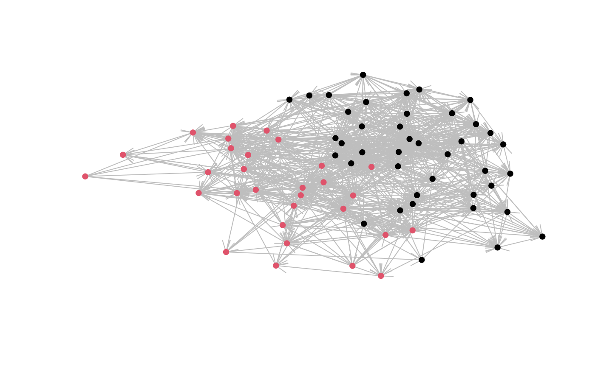

Modeling a binary network outcome
Peter Hoff
2020-12-01
Source:vignettes/binary_demo.Rmd
binary_demo.RmdLoad the library:
Set up the data:
data(lazegalaw)
Y<-lazegalaw$Y[,,2]
Xn<-lazegalaw$X[,c(2,4,5,6)]
Xd<-lazegalaw$Y[,,-2]
Xd<-array( c(Xd,outer(Xn[,4],Xn[,4],"==")),dim=dim(Xd)+c(0,0,1))
dimnames(Xd)[[3]]<-c("advice","cowork","samepractice")
dimnames(Xd)[[3]]## [1] "advice" "cowork" "samepractice"
dimnames(Xn)[[2]]## [1] "female" "seniority" "age" "practice"plot the network with “practice” denoted by plotting color:
netplot(lazegalaw$Y[,,2],ncol=Xn[,4])
fitSRRM<-ame(Y, Xd=Xd, Xr=Xn, Xc=Xn, family="bin")
summary(fitSRRM) ## Length Class Mode
## BETA 4800 -none- numeric
## VC 2000 -none- numeric
## APM 71 -none- numeric
## BPM 71 -none- numeric
## U 0 -none- numeric
## V 0 -none- numeric
## UVPM 5041 -none- numeric
## EZ 5041 -none- numeric
## YPM 5041 -none- numeric
## GOF 2005 -none- numeric
fitAME<-ame(Y, Xd=Xd, Xr=Xn, Xc=Xn, R=3, family="bin")
summary(fitAME) ## Length Class Mode
## BETA 4800 -none- numeric
## VC 2000 -none- numeric
## APM 71 -none- numeric
## BPM 71 -none- numeric
## U 213 -none- numeric
## V 213 -none- numeric
## UVPM 5041 -none- numeric
## EZ 5041 -none- numeric
## YPM 5041 -none- numeric
## GOF 2005 -none- numeric